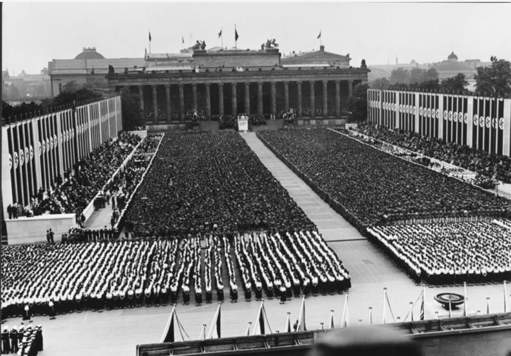
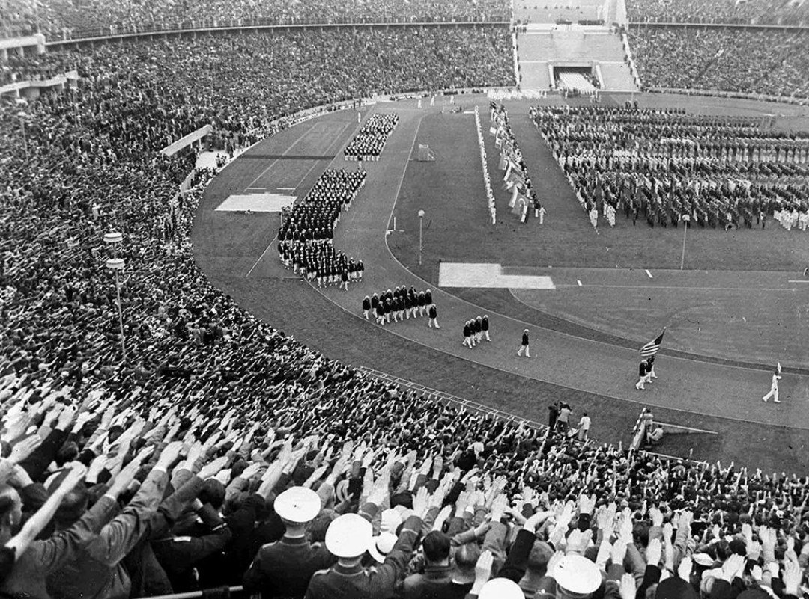
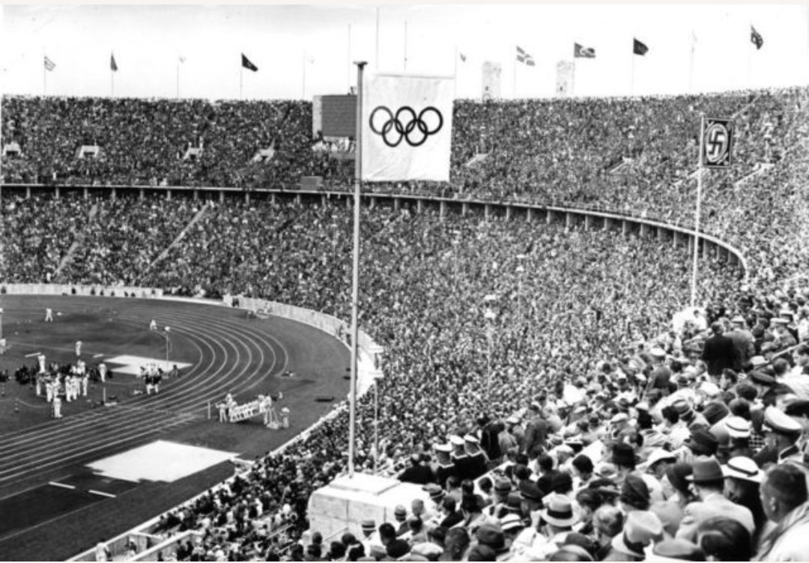
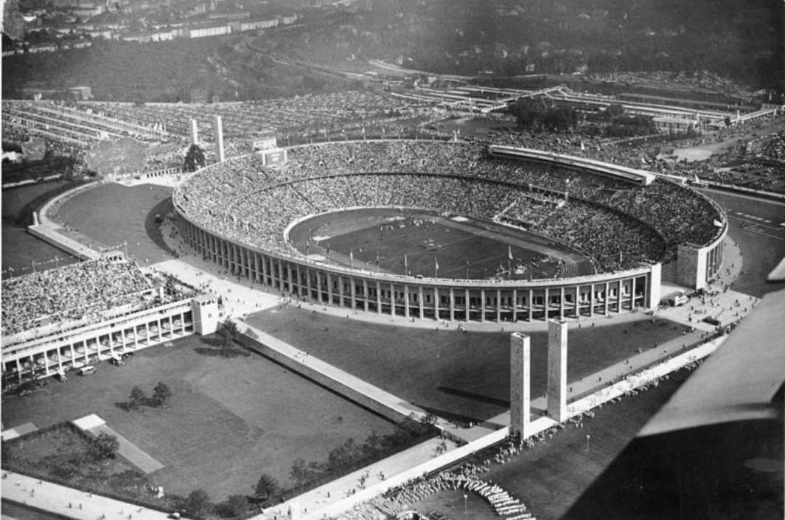
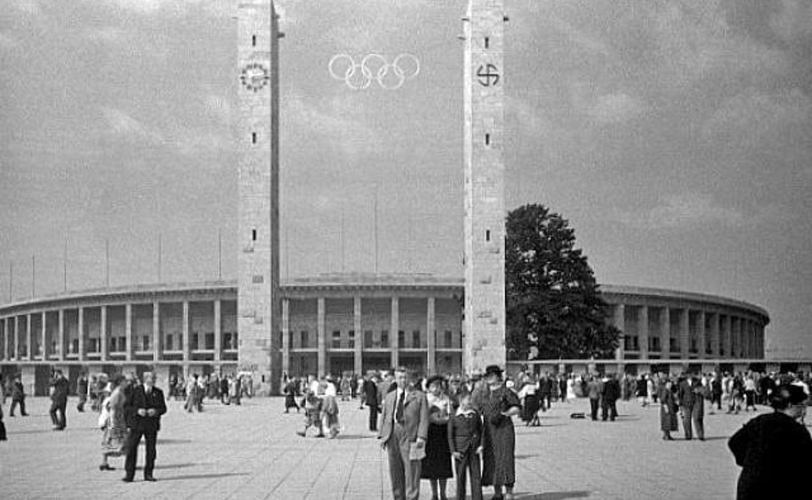
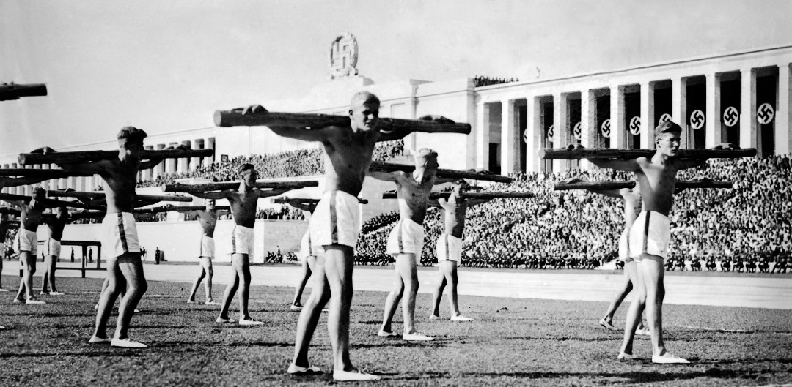
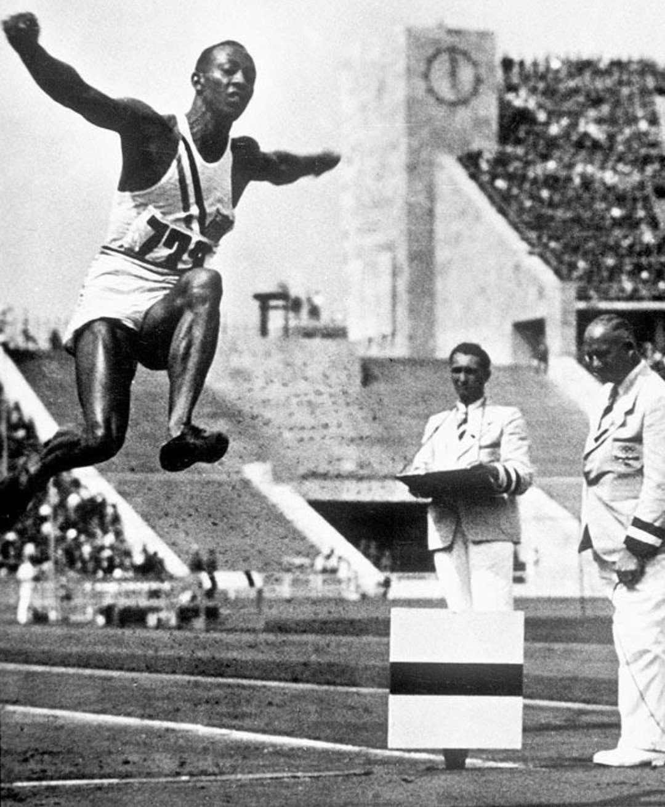
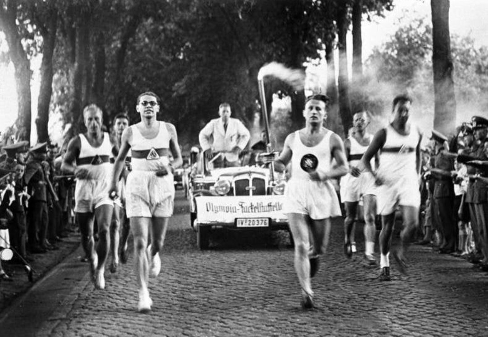
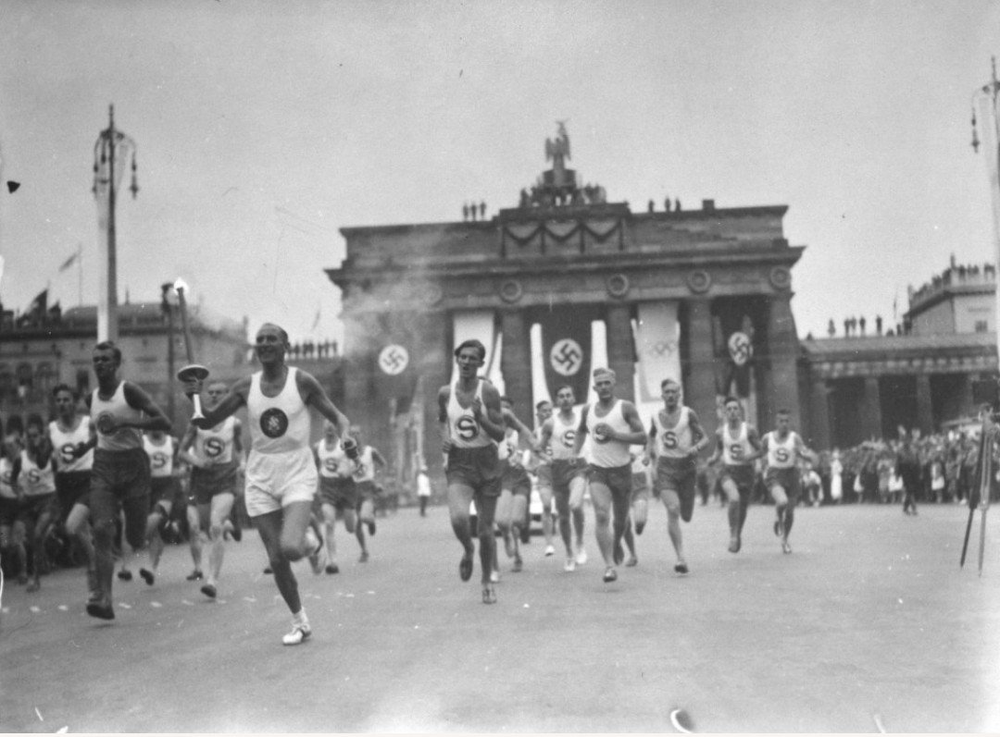
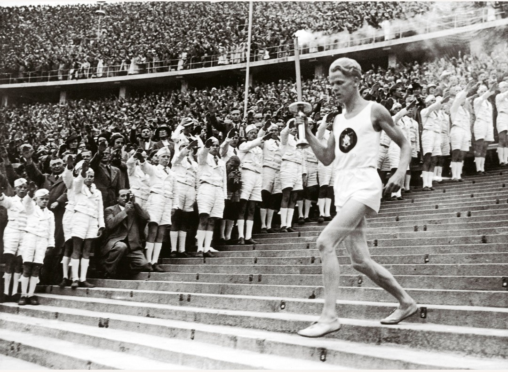

En 1936, Berlin devient le théâtre d’un événement sans précédent. Sous les yeux du monde, le régime nazi transforme les Jeux Olympiques en une immense vitrine politique destinée à glorifier l’Allemagne, à masquer la brutalité du pouvoir et à imposer son idéologie par l’image, la discipline et la mise en scène.

Les rassemblements massifs, les tribunes monumentales et les drapeaux omniprésents montrent que les Jeux ne sont pas seulement sportifs : ils sont un instrument de propagande destiné à impressionner les visiteurs étrangers et à galvaniser la population allemande.

Dans le stade olympique, des dizaines de milliers de spectateurs exécutent le salut nazi. Le sport devient un décor où le régime impose ses symboles et sa vision du monde.

Les anneaux olympiques et la croix gammée flottent côte à côte. Le régime nazi cherche à se présenter comme moderne, organisé et pacifique, tout en imposant ses emblèmes partout où les caméras se posent.

L’architecture monumentale du stade, pensée pour la propagande, doit frapper les esprits. Tout est calculé pour donner une image de puissance et de grandeur.

Les deux tours portant les anneaux olympiques deviennent l’un des symboles les plus photographiés des Jeux. Le régime nazi comprend parfaitement la force des images et les utilise pour façonner sa réputation internationale.

Les démonstrations physiques synchronisées illustrent l’obsession du régime pour la discipline, la force et l’unité. Le sport devient un outil de contrôle social et de mise en scène de la “jeunesse allemande”.

Malgré la propagande omniprésente, les Jeux voient des performances sportives exceptionnelles, dont celles de Jesse Owens, qui humilie la théorie raciale du régime par son talent et sa détermination.

Pour la première fois dans l’histoire, la flamme olympique traverse les villes d’Europe avant d’arriver au stade. Ce rituel, aujourd’hui universel, est une création du régime nazi. Hitler comprend la puissance symbolique d’un feu voyageant de main en main, unissant les peuples autour d’un récit mythologique réinventé pour servir sa propagande.

Le passage de la flamme à la porte de Brandebourg devient l’une des images les plus célèbres des Jeux. Ce rituel, né en 1936, est aujourd’hui l’un des symboles majeurs des Jeux Olympiques modernes.

La descente de la flamme dans le stade, sous les saluts et les regards de la foule, achève le rituel imaginé par le régime. Ce moment, soigneusement filmé et photographié, ancre définitivement la flamme olympique dans l’imaginaire collectif.